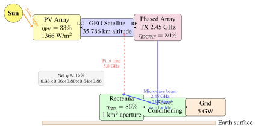

Chapter 31: Future Concepts and Emerging Space Technologies¶
“The dinosaurs became extinct because they didn’t have a space programme. And if we become extinct because we don’t have a space programme, it’ll serve us right.”
—Larry Niven
The space industry stands at a moment of profound technological convergence. Advances that would have seemed implausible in isolation—cheap reusable launch vehicles, on-orbit additive manufacturing, quantum-secured communications, and orbital solar power—are arriving simultaneously, catalysed by cross-pollination from artificial intelligence, advanced materials science, photonics, and nuclear engineering. Satellite technology is no longer merely an enabler of terrestrial services; it is becoming the substrate for a space-based industrial civilisation. This chapter surveys the most consequential emerging concepts across energy, manufacturing, communications, propulsion, quantum science, and observational astronomy, situating each within a technology maturity framework and projecting economic trajectories to mid-century.
31.1 Introduction: Technology Readiness and Convergence¶
NASA’s Technology Readiness Level (TRL) scale, originally developed by Stan Sadin in the 1970s and formalised across ESA and DoD acquisition frameworks, provides a standardised vocabulary for assessing the maturity of emerging technologies:
-
TRL 1–3: Basic research, proof of concept, analytical validation in laboratory
-
TRL 4–5: Component validation in laboratory and relevant environment
-
TRL 6–7: System prototype demonstrated in relevant and operational environment
-
TRL 8–9: System complete and flight qualified; proven through mission operations
Many of the technologies described in this chapter occupy TRL 3–6, meaning they have demonstrated physical plausibility but have not yet been proven at operational scale in space. The convergence thesis holds that several enabling factors must mature concurrently for transformative concepts to reach commercialisation: ultra-low launch costs, on-orbit autonomous assembly, high-capacity power systems, and AI-driven operations. When these enablers align—as they appear to be doing in the late 2020s—previously stalled concepts can transition from TRL 4 to TRL 9 within a single decade.
Cross-Cutting Enablers. Four enabling technologies underpin virtually every advanced space concept described in this chapter: (1) reusable launch vehicles reducing cost-to-orbit by 10–100\(\times\); (2) AI-driven autonomy enabling spacecraft to operate without continuous human oversight; (3) additive manufacturing permitting large structures to be fabricated in orbit rather than launched as monolithic assemblies; and (4) advanced photovoltaics and power electronics approaching the efficiency and specific mass targets needed for economical space-based power generation.
31.2 Space-Based Solar Power¶
31.2.1 Concept and History¶
The idea of harvesting solar energy in space and transmitting it wirelessly to Earth is one of the oldest serious proposals in astronautical engineering. Peter Glaser of Arthur D. Little Inc. first articulated the concept in a 1968 paper published in Science: “Power from the Sun: Its Future,” which proposed placing photovoltaic arrays in geostationary orbit (GEO) and beaming the collected energy to Earth using microwave radiation (Glaser 1968). Glaser noted three fundamental space advantages: the solar constant at GEO is 1361 W/m\(^2\) continuously (unattenuated by atmosphere or night), collections are uninterrupted by weather, and the geostationary position permits continuous illumination of a fixed ground receiver.
The concept was taken seriously enough that the United States Department of Energy (DoE) and NASA jointly funded a $20 million Reference System Study between 1976 and 1980. The 1979 Reference System envisaged a single solar power satellite with a 5 km \(\times\) 5 km silicon photovoltaic array in GEO, transmitting 2.45 GHz microwave energy via a 1 km diameter phased array antenna to a 10 km \(\times\) 13 km elliptical rectenna (rectifying antenna) on the ground, ultimately delivering 5 GW of electrical power to the grid—comparable to five large nuclear power stations. The report concluded that the concept was technically feasible but economically prohibitive given the launch costs of the era, which would have required lifting approximately 50,000 tonnes to GEO using the Space Shuttle. The programme was cancelled in 1981 under budgetary pressure.
Interest re-emerged in the 1990s driven by concerns about climate change and energy security. NASA’s Fresh Look Study (1995–1997), led by John Mankins, revisited SBSP using modular architectures and lighter materials. The confluence of dramatically falling launch costs, improvements in thin-film photovoltaics, and solid-state microwave power amplifiers in the 2010s and 2020s has brought SBSP back into serious engineering consideration by space agencies and private entities worldwide.
31.2.2 Modern SBSP Architectures¶
The end-to-end energy conversion chain for SBSP involves multiple sequential efficiency steps, each introducing losses:
where a representative budget for a modern system yields:
SBSP End-to-End Efficiency Chain
| Stage | Efficiency | Notes |
|---|---|---|
| PV conversion (\(\eta_{\text{PV}}\)) | 33% | Multi-junction GaAs/Ge, AM0 spectrum |
| DC-to-DC power conditioning (\(\eta_{\text{DC/DC}}\)) | 96% | High-voltage distribution |
| DC-to-RF solid-state (\(\eta_{\text{DC/RF}}\)) | 80% | GaN MMIC at 2.45 GHz |
| Free-space propagation (\(\eta_{\text{prop}}\)) | 54% | Gaussian beam, 1 km aperture |
| Rectenna conversion (\(\eta_{\text{rectenna}}\)) | 86% | Schottky diode rectenna |
| Net system efficiency | \(\mathbf{\approx 12\%}\) | \(0.33 \times 0.96 \times 0.80 \times 0.54 \times 0.86\) |
Even at 12% net efficiency, GEO solar input is 1361 W/m\(^2\) continuously versus an average terrestrial yield of \(\sim\)200 W/m\(^2\) (accounting for night, weather, and latitude), providing a \(\sim\)6.8\(\times\) effective advantage before efficiency losses.
The microwave transmission parameters are chosen to balance beam efficiency and safety. The 2.45 GHz Industrial, Scientific, and Medical (ISM) band is preferred for regulatory reasons and low atmospheric attenuation. At GEO (35,786 km), the diffraction-limited beam from a 1 km aperture antenna has a central spot diameter of approximately 1 km at the ground. Peak power density is kept below 230 W/m\(^2\) at beam centre—substantially less than the 1000 W/m\(^2\) of direct sunlight—making the beam safe for humans and aircraft. Beam pointing is maintained by a retrodirective phased array system: the ground rectenna transmits a low-power pilot tone at 5.8 GHz; the satellite’s phased array detects this signal and phase-conjugates each element’s transmission to steer the beam precisely to the source, providing inherent safety since the beam cannot be redirected without the pilot tone.
CASSIOPeiA (UK)¶
The Constant Aperture, Solid-State, Integrated, Orbital Phased Array (CASSIOPeiA) concept, developed by Ian Cash of International Electric Company, is notable for its elegant solution to the attitude control problem. Traditional SBSP designs require either a complex dual-axis gimbal mechanism to keep PV arrays facing the sun while the antenna faces Earth, or a large rotary joint to transfer multi-gigawatt power across a rotating interface—both represent massive engineering challenges. CASSIOPeiA avoids these by using a conical structure that integrates both PV cells and transmitting antenna elements across its surface. The cone slowly rotates about its axis to maintain thermal equilibrium. Electronic beam steering via phase shifts allows the transmitted beam to be pointed at any ground receiver without mechanical reorientation. This “no moving parts” architecture dramatically simplifies manufacturing, assembly, and long-term reliability.
SPIDERS (ESA)¶
Modular concepts, studied in several programmes including the European SOLARIS preparatory work, use many identical tiles, each integrating solar cells, power conditioning and microwave transmitter elements into a planar panel of modest size. A gigawatt-class system would consist of very large numbers of such tiles assembled autonomously in orbit into a kilometre-scale structure. The key advantage is scalability: demonstration systems at small scale are structurally similar to the full system, differing mainly in tile count. In-orbit robotic assembly is the critical enabling technology, and studies of these concepts rest on very demanding assumptions about mass per kilowatt and launch cost that have not yet been demonstrated.
31.2.3 Recent Demonstrations¶
Between 2020 and 2023 small experiments flew in orbit that tested components of the SBSP concept: a solar-to-radio-frequency conversion module (the NRL PRAM, 2020) and, in 2023, the Caltech SSPD-1 demonstrator, whose MAPLE experiment was the first demonstration of wireless power transfer by a phased array in space. These are component-level demonstrations at tiny scale; no space solar power satellite has delivered power to the grid.
Caltech SSPD-1 (2023). The Space Solar Power Demonstrator-1 (SSPD-1) was launched in January 2023 as a rideshare payload. It carried three experiments: MAPLE (Microwave Array for Power-transfer Low-orbit Experiment), which used a lightweight phased array to beam power wirelessly in space to receivers on the same spacecraft, and was also reported to have sent a detectable signal to a receiver on the ground at Caltech (the first demonstration of wireless power transfer in space by a flexible phased array); DOLCE (Deployable on-Orbit ultraLight Composite Experiment), a deployable ultralight structure experiment; and ALBA, which exposed 32 different types of solar cell to the space environment. MAPLE showed that a phased array can steer a power beam electronically in orbit; the power involved was tiny compared with that of a utility-scale system.
NRL PRAM (2020). The Naval Research Laboratory’s Photovoltaic Radio-frequency Antenna Module flew aboard the US Air Force X-37B spaceplane from 2020 to 2022. PRAM was a small module that converted sunlight to radio-frequency power, demonstrating the solar-to-RF conversion element of SBSP in the space environment; it was not a beam-to-ground power demonstration.
JAXA SSPS Roadmap. The Japan Aerospace Exploration Agency has maintained one of the longest-running SBSP research programmes. Japanese plans include a small demonstration in low Earth orbit, with the longer-term aim of a geostationary system; dates are targets and have moved before.
ESA SOLARIS. ESA began the SOLARIS preparatory initiative in 2022 to assess whether space-based solar power could contribute to European energy needs; its studies concluded that the concept might be technically feasible but depends on large cost reductions in launch and in-orbit assembly. Any later demonstration depends on decisions not yet taken.
China OMEGA. China’s Orb-shape Membrane Energy Gathering Array concept is a Chinese space solar power concept with proposed staged demonstrations between about 2030 and 2050; the schedule is a stated ambition rather than an established programme.
31.2.4 Economic Analysis¶
The primary barrier to SBSP has always been launch cost. The 1979 Reference System required lifting approximately 50,000 tonnes to GEO at a cost that, even with shuttle economics, exceeded $1 trillion—completely non-competitive with any terrestrial energy source. The economics transform dramatically with low-cost heavy lift. SpaceX Starship is targeting a fully reusable launch cost below $100/kg to LEO; GEO delivery adds a further factor via electric orbit raising over months, but at $300/kg to GEO a 1 GW SBSP system weighing 2,000 tonnes (at 2 kg/kW) has a launch cost of $600 million—comparable to a large terrestrial solar farm.
At 2 kg/kW specific mass and $100/kg launch cost, the launch-cost contribution is about $200 per kW of collected solar power, or roughly $1,700 per net kW delivered at 12% end-to-end efficiency (Eq. (31.2)). That alone is of the same order as the total capital cost of terrestrial generation (of the order of $1,000–4,000/kW for wind and solar and several thousand $/kW for nuclear), and it excludes the spacecraft, assembly and ground segment, so the economics remain unproven. Unlike terrestrial solar or wind, SBSP requires no land area (critical in land-constrained nations), produces firm (dispatchable) power without storage, and produces zero atmospheric emissions during operation. Transmission losses remain a key challenge: the 12% end-to-end efficiency is lower than ground-based systems, but the combination of 24/7 availability at full capacity and the high raw solar flux partially compensates.
31.3 In-Space Manufacturing and Assembly¶
31.3.1 Commercial Space Stations¶
The retirement of the International Space Station, planned (as of 2025) for around 2030, is motivating NASA’s Commercial Low Earth Orbit Destinations (CLD) programme to fund private successors. Multiple teams are pursuing distinct architectural approaches:
Axiom Space Station. Axiom Space has flown four private astronaut missions (Ax-1 through Ax-4) to the ISS, gaining operational experience before deploying its own modules. Axiom’s plan is to attach its first commercial module to the ISS (schedules have slipped, and as of 2025 launch is expected around 2026–2027) and later detach the Axiom Station as a free-flying platform when the ISS retires.
Starlab. The Starlab station, developed by Voyager Space in partnership with Airbus, received a NASA Commercial LEO Destinations funded Space Act Agreement in 2021. It is designed as a single-launch station with a large habitat module and was targeting a launch in the late 2020s (as of 2025). The station is designed to accommodate four resident crew members.
Sierra Space LIFE Module. Sierra Space’s Large Integrated Flexible Environment (LIFE) inflatable habitat offers 82 m\(^2\) of usable floor area in a module that launches compactly and inflates on orbit. Three LIFE modules were planned for Orbital Reef.
Orbital Reef. The Orbital Reef partnership (led by Blue Origin and Sierra Space, with other partners) received a NASA CLD funded agreement and targets the end of the decade. Blue Origin contributes the core module and launch via New Glenn; Sierra Space provides LIFE habitats and Dream Chaser crew/cargo transport.
31.3.2 Microgravity Manufacturing¶
The microgravity environment of orbit suppresses sedimentation, buoyancy-driven convection, and container-wall contamination, enabling the production of materials impossible or impractical to fabricate on Earth’s surface.
ZBLAN Optical Fibre¶
ZBLAN—the fluoride glass system ZrF\(_4\)-BaF\(_2\)-LaF\(_3\)-AlF\(_3\)-NaF—has a theoretical minimum attenuation of 0.01 dB/km at 2.55 \(\mu\)m wavelength, more than twenty times lower than the best silica fibre (0.2 dB/km at 1550 nm). This extraordinary transparency arises from the absence of OH absorption bands in mid-infrared wavelengths. However, when ZBLAN is drawn into fibre in a terrestrial gravity environment, buoyancy-driven convection during solidification creates microcrystallites within the glass matrix, raising actual attenuation to 0.1–1.0 dB/km—still excellent but far short of theoretical.
Microgravity suppresses convective crystallisation, and orbital experiments by Made in Space (now Redwire) from 2017 to 2019 aboard the ISS consistently produced ZBLAN fibre with lower microcrystallite density than terrestrial control samples. If commercial-scale ZBLAN production in orbit can be demonstrated, the implications for long-haul fibre links could be significant: ZBLAN’s theoretical mid-infrared attenuation is far below that of silica fibre, which in principle could allow much longer repeaterless spans, although this has not been demonstrated at scale.
Pharmaceutical Manufacturing in Orbit¶
Protein crystals grown in microgravity are characteristically an order of magnitude larger and more structurally perfect than equivalent terrestrial crystals, because the absence of sedimentation allows slow, diffusion-limited growth rather than the rapid, turbulent accretion typical on Earth. High-quality protein crystals enable X-ray crystallography with superior resolution, accelerating drug discovery and structural biology.
Varda Space Industries launched its W-1 mission in June 2023 aboard a Rocket Lab Photon satellite bus: a self-contained pharmaceutical manufacturing module processed crystallisation experiments in orbit for several months, then returned the capsule to a landing in Utah in early 2024. The mission demonstrated end-to-end commercial in-space pharmaceutical manufacturing and reentry logistics. Subsequent Varda W-series missions are planned with increased manufacturing volume and client pharmaceutical compounds.
Advanced Materials and Biological Fabrication¶
Metal foams—materials with engineered porosity that combine low density with high stiffness—form more homogeneously in microgravity because buoyancy-driven bubble migration is absent during solidification. Semiconductor crystal growth (particularly GaAs and InP for III-V photovoltaics) benefits similarly. Organic tissue engineering—growing three-dimensional organoids and vascularised tissue constructs—is significantly more effective in microgravity because cells self-organise into three-dimensional architectures without mechanical support scaffolding, enabling disease models and eventually transplantable tissues.
31.3.3 In-Space 3D Printing and Assembly¶
ARCHINAUT. Redwire’s ARCHINAUT concept (a successor of the Made In Space Archinaut work) illustrates in-space additive manufacturing of structures. The system employs a FDM (Fused Deposition Modelling) extruder for PEEK (polyether ether ketone) thermoplastic, operating in the space vacuum environment. A 3-axis robotic arm integrates with the extruder to deposit material into structural beams up to 10 m in length over approximately 8 hours of continuous operation. UV curing provides surface finishing. NASA awarded Redwire a $73.7 million Tipping Point contract for on-orbit demonstration via OSAM-2 (On-orbit Servicing, Assembly, and Manufacturing 2), which targets the fabrication and attachment of a solar array support beam in LEO.
Lunar Regolith Printing. ICON and NASA’s Project Olympus programme is developing the Olympus Construction System: a mobile construction platform that uses lunar regolith as raw feedstock for additive manufacturing of habitat structures via laser sintering of regolith to produce load-bearing walls and vaulted structures. Separately, ICON 3D-printed the Mars Dune Alpha habitat used for NASA’s CHAPEA (Crew Health and Performance Exploration Analog) one-year analog mission at Johnson Space Center (2023–2024), which tested crew habitability concepts for surface missions.
Metal Additive Manufacturing. In vacuum, electron beam additive manufacturing (EBAM) offers advantages over laser-based processes: the electron beam has higher energy density, can be rapidly deflected electromagnetically, and operates efficiently in hard vacuum. Laser powder bed fusion (LPBF) is also being adapted for space manufacturing environments. These metal AM capabilities are essential for on-orbit fabrication of structural brackets, propellant tanks, and thermal management components.
Self-Assembling Architectures. DARPA’s Phoenix programme explored the concept of repurposing components from retired GEO satellites using a servicer spacecraft. The broader vision of modular, self-assembling satellite architectures—where standardised mechanical and electrical interfaces allow heterogeneous modules to autonomously mate and configure—is pursued by multiple research teams. Key technology challenges include alignment (sub-millimetre docking accuracy), latching (secure mechanical connection), and electrical/data coupling (through-contact power and communications).
Economic Case for In-Space Manufacturing. The economic justification for manufacturing in orbit must clear a high bar: the cost of delivering raw materials and energy to orbit must be lower than the value premium of the resulting product. Currently, only products whose mass-specific value exceeds approximately $10,000/kg are plausible candidates: ZBLAN fibre (potentially $1M/kg), pharmaceutical compounds ($100k–$10M/kg), and semiconductor wafers ($10k–$1M/kg) all meet this criterion. Structural materials and bulk commodities do not, unless manufactured from in-situ resources (lunar regolith, asteroid material).
31.4 Deep Space Communication Infrastructure¶
31.4.1 Next-Generation Deep Space Network¶
NASA’s Deep Space Network (DSN), operated by JPL, is the sole telecommunications infrastructure supporting all NASA planetary and deep space missions. The network comprises three ground station complexes at Goldstone (California), Madrid (Spain), and Canberra (Australia), providing near-continuous coverage of any sky position through their 120\(^\circ\) longitude separation. The current antenna fleet includes 34 m beam-waveguide (BWG) dish antennas as the primary workhorse for Ka- and X-band, and legacy 70 m antennas at each complex.
Ongoing upgrades include Ka-band capability at all three complexes, antenna arraying (combining multiple 34 m dishes coherently for effective aperture equivalent to a 70 m antenna), and Deep Space Station-23 (DSS-23): a new 34 m antenna at Goldstone commissioned in 2024 to increase network capacity for the growing fleet of planetary spacecraft.
DSOC (Deep Space Optical Communication). The most transformative near-term capability improvement is laser optical communications. The Deep Space Optical Communication technology demonstrator, carried aboard NASA’s Psyche asteroid mission, employs a 22 cm transmit telescope on the spacecraft emitting at 1550 nm (near-infrared), with the ground terminal using the Hale 5 m telescope at Palomar Observatory fitted with a photon-counting superconducting nanowire single-photon detector (SNSPD).
DSOC achieved first light in November 2023 at a distance of about 16 million km. In December 2023 it demonstrated a downlink at a maximum rate of 267 Mbps from about 31 million km, and in April 2024 it maintained a link of about 25 Mbps from about 226 million km, rates well above those of a deep-space X-band link at similar distance. The ultimate goal is a photon-counting receiver sensitivity enabling 1 Gbps from Mars (56–401 million km depending on orbital phase), transforming planetary exploration data volumes from X-band’s 2–6 Mbps on best passes to streaming-quality video from the Martian surface.
31.4.2 Lunar Communications Architecture¶
NASA’s Artemis programme requires a dedicated lunar telecommunications and navigation infrastructure qualitatively more capable than the ad hoc relay arrangements of the Apollo era.
LunaNet. NASA’s LunaNet is an open, interoperable lunar communication and navigation architecture analogous to the terrestrial internet. Rather than a single NASA-owned and operated network, LunaNet defines interface standards—including Delay-Tolerant Networking Bundle Protocol (RFC 5050) and Contact Graph Routing (CGR)—that any conforming service provider can implement, creating a competitive marketplace for lunar communications services. Multiple NASA Tipping Point contracts fund commercial providers to develop LunaNet-compatible services.
Nokia Bell Labs Lunar 4G LTE. NASA awarded Nokia Bell Labs a $14.1 million Tipping Point contract in 2020 to deploy the first cellular network on the Moon. The system is based on 4G LTE technology and is intended to support video transmission and EVA crew communications during surface operations. The network comprises a base station deployed by a NASA lander and user equipment integrated into astronaut suits and surface rovers.
ESA Moonlight. ESA’s Moonlight initiative, developed by Surrey Satellite Technology Ltd (SSTL) and Telespazio, proposes a constellation of four dedicated lunar relay satellites in highly elliptical orbits optimised for south polar coverage. The orbit design provides continuous line-of-sight to the lunar south pole—the primary Artemis landing target—from at least one satellite at all times. Moonlight provides both communications relay and a navigation service (Lunar Communication and Navigation Service, LCNS) analogous to GNSS, enabling surface position determination to metre accuracy without Earth-based DSN contact.
Intuitive Machines IDSN. Intuitive Machines’ IM-1 Nova-C lander, which achieved the first US lunar surface landing since Apollo 17 in February 2024, landed near the lunar south pole region. Commercial lunar relay and navigation services, offered by private companies with NASA and international agencies as anchor customers, are being developed, following the model of commercial satellite communications.
31.4.3 Mars and Deep Space Internet¶
The current Mars telecommunications relay network comprises NASA’s Mars Reconnaissance Orbiter (MRO, 2 Mbps UHF relay), MAVEN, and international assets including ESA’s Trace Gas Orbiter and China’s Tianwen-1. The fundamental challenge of interplanetary communications is the one-way light travel time: 3–24 minutes to Mars (depending on orbital geometry), precluding real-time interactive protocols. The Delay-Tolerant Networking (DTN) architecture addresses this through a store-and-forward paradigm formalised in CCSDS 734.2-B-1. DTN’s Bundle Protocol implements custody transfer, enabling reliable end-to-end delivery across links that are interrupted for hours or days at a time. The Licklider Transfer Protocol (LTP, CCSDS 734.2-B-1) provides a link-layer retransmission mechanism tuned for the long round-trip delays of deep space links.
A future dedicated Mars telecommunications orbiter in Mars areostationary orbit (17,031 km altitude, 24.62-hour period) could provide 200 Mbps optical downlink to Earth and broadband relay coverage for surface assets. The Gateway lunar station, planned as part of the Artemis infrastructure in a Near-Rectilinear Halo Orbit (NRHO), will serve as a communications hub for cislunar operations and a relay node for the lunar far side.
31.5 Advanced Propulsion Concepts¶
31.5.1 Solar Electric Propulsion¶
Solar Electric Propulsion (SEP) combines solar power generation with electric thruster technology to achieve specific impulses of 3,000–10,000 s—an order of magnitude higher than chemical propulsion—at the cost of very low thrust levels (millinewtons to newtons). The thrust-power relationship for an electric thruster operating at total efficiency \(\eta\) is:
For a 1 kW system at \(\eta = 0.65\) and \(I_{sp} = 3000\) s, this yields approximately 44 mN—far too low for rapid orbit changes but extremely propellant-efficient for long-duration missions.
Notable SEP applications include NASA’s Dawn mission (NSTAR gridded-ion engines, three individually throttleable thrusters, \(I_{sp}\) up to 3200 s), AEROJET’s NEXT-C engine on the DART mission (6.9 kW power, 236 mN maximum thrust, \(I_{sp}\) 4190 s, xenon propellant), and SpaceX Starlink’s krypton Hall thrusters (approximately 1.6 mN thrust, 1500 s \(I_{sp}\), enabling orbit raising and deorbit for the entire constellation). For cargo missions to Mars, a 200 kW SEP system could deliver payloads too large for chemical propulsion in a 5-year spiral transit, providing mass-efficient transport at the cost of mission duration.
31.5.2 Nuclear Propulsion¶
Nuclear propulsion offers performance fundamentally inaccessible to solar or chemical systems, particularly for missions far from the Sun (where solar flux diminishes as \(1/r^2\)) or where high power density is required for rapid orbit changes.
Kilopower (KRUSTY). NASA’s Kilopower project, developed in partnership with the Department of Energy, demonstrated a compact fission reactor system in ground testing (Kilowatt Reactor Using Stirling TechnologY, KRUSTY) in 2018 at the Nevada National Security Site. The reactor used a highly enriched uranium core in a fast-neutron spectrum, with heat passed to free-piston Stirling convertors (heat pipes carried the heat from the core). The Kilopower concept covered electrical power from about 1 to 10 kW, and was proposed for lunar surface power in places such as permanently shadowed craters and for Mars surface operations where solar power is insufficient; as of 2025 no Kilopower unit has flown.
Nuclear Thermal Propulsion (NTP). NTP heats a propellant—typically hydrogen—by passing it through a fission reactor core, achieving exhaust temperatures of 2,500–3,000 K. The specific impulse is governed by:
Nuclear Thermal Propulsion: Specific Impulse
For hydrogen propellant (\(M_{\text{mol}} = 0.002\) kg/mol), reactor temperature \(T_c = 2700\) K, nozzle efficiency \(\eta = 0.9\), and \(g_0 = 9.81\) m/s\(^2\):
With higher-temperature carbide fuel elements (\(T_c \approx 3000\) K), \(I_{sp}\) approaches 900 s—twice the performance of the best chemical engines. The NERVA/Rover programme demonstrated specific impulse of the order of 800 s in ground testing (the programme ended in 1972).
DARPA’s DRACO (Demonstration Rocket for Agile Cislunar Operations) programme, conducted jointly with NASA, was set up to flight-test a nuclear thermal rocket using high-assay low-enriched uranium (HALEU) fuel; the flight date slipped and the programme was reported to have been ended in 2025. DRACO’s primary mission is to demonstrate rapid cislunar manoeuvring: a spacecraft that can change its orbit significantly in hours rather than the weeks required by SEP.
Nuclear Electric Propulsion (NEP). NEP couples a fission reactor to an electric thruster system, combining the high power density of nuclear with the high \(I_{sp}\) of ion propulsion. Russia’s “Zeus” nuclear tug project (the Transport and Energy Module, TEM) envisages a megawatt-class gas-cooled reactor driving a turbogenerator to power electric thrusters, with a demonstration planned for around the 2030s. The conceptual JIMO (Jupiter Icy Moons Orbiter) mission studied by NASA in 2002–2005 proposed 200 kW NEP to achieve orbit insertion around multiple Jovian moons successively—a mission impossible with any other propulsion technology.
31.5.3 Beamed Energy and Momentum Exchange¶
Laser Propulsion. Two distinct mechanisms enable laser propulsion: ablative propulsion vaporises a small mass of ablator material to produce thrust at specific impulses of 1,000–10,000 s; laser-thermal propulsion heats a conventional propellant in a heat exchanger irradiated by a high-power laser beam. The specific thrust is:
where the momentum coupling coefficient \(C_m\) (N/W) depends on the ablation mechanism, typically \(C_m \approx 10^{-4}\)–\(10^{-3}\) N/W for ablative systems. At 1 MW laser power and \(C_m = 5 \times 10^{-4}\) N/W, thrust is 500 N. The Myrabo Lightcraft concept demonstrated laser-propelled vehicles reaching 71 m altitude in 2000 using a 10 kW pulsed CO\(_2\) laser.
Electrodynamic Tethers. A conducting tether deployed from a LEO spacecraft, flowing current \(I\) through the ambient magnetic field \(\mathbf{B}\), experiences a Lorentz force \(\mathbf{F} = I\,\mathbf{L} \times \mathbf{B}\). The force direction can provide orbit raising (electrostatic electron collection at one end, ion emission at the other) or deorbit (reversed current direction). The Terminator Tape (Tethers Unlimited) is a passive deorbit device: a 75 m conducting tape deployed from an end-of-life cubesat, which dissipates orbital energy via eddy currents induced by the geomagnetic field, deorbiting a 10 kg satellite in 25 days from 800 km without propellant.
Momentum Exchange Tethers (MXER) offer a propellantless approach to orbit raising: a long (100 km) rotating tether in LEO can capture a payload at the low end of its rotation arc and release it at the high end, transferring momentum from the tether to the payload and boosting the payload to a higher orbit or interplanetary trajectory while the tether descends—to be re-boosted by electrodynamic force.
Solar Sails. JAXA’s IKAROS (Interplanetary Kite-craft Accelerated by Radiation Of the Sun), launched in May 2010 (with its sail deployed in June 2010), was the first spacecraft to demonstrate solar sailing in interplanetary space. The 14 m \(\times\) 14 m polyimide sail, 7.5 \(\mu\)m thick with embedded thin-film solar cells, accelerated IKAROS during its Venus flyby trajectory, demonstrating measurable photon pressure acceleration. The Planetary Society’s LightSail 2 (launched 2019) demonstrated orbit raising in LEO using only its 32 m\(^2\) sail, by changing the sail’s orientation (face-on and edge-on to the Sun) around each orbit. NASA’s NEA Scout, a 6U CubeSat with an 86 m\(^2\) sail, was launched aboard Artemis I in 2022 as a technology demonstration for low-cost near-Earth asteroid reconnaissance, but contact with it was not established after launch.
31.6 Quantum Technologies in Space¶
31.6.1 Quantum Sensing and Metrology¶
Quantum sensing exploits the wave nature of matter to achieve measurement sensitivities that classical instruments cannot approach. Atom interferometry uses laser-cooled atoms as test masses whose quantum mechanical wave functions are split, routed along divergent paths, and then recombined. Phase shifts accumulated along different paths encode information about accelerations, rotations, and gravitational gradients experienced by the atom cloud.
The phase shift in a pulse atom interferometer (Mach–Zehnder configuration with \(\pi/2\)–\(\pi\)–\(\pi/2\) laser pulses) is:
Atom Interferometry: Phase Sensitivity
In equation ((31.6)):
-
\(k_{\text{eff}} = 2k_{\text{laser}} \approx 1.6 \times 10^7\) m\(^{-1}\): effective wavevector of the two-photon Raman transition (Rb at 780 nm)
-
\(a\): acceleration to be measured (m/s\(^2\))
-
\(T\): free-evolution time between pulses (s)
In microgravity, \(T\) can extend to 10–30 s (versus 0.1–0.5 s in ground experiments), enhancing sensitivity as \(T^2\). Projected microgravity sensitivity is as low as \(10^{-12}\) m/s\(^2/\sqrt{\text{Hz}}\)—enabling detection of gravitational anomalies from underground water reservoirs, ore bodies, and subduction zones.
Space Gravimetry. The NASA/GFZ GRACE Follow-On mission uses laser interferometry between two satellites to map time-varying gravity anomalies at nanometre ranging precision, tracking ice sheet mass changes, groundwater depletion, and post-glacial rebound. A quantum gravimetry mission using atom interferometers aboard the two satellites would provide a 100\(\times\) sensitivity improvement, enabling weekly gravity maps at km-scale spatial resolution. ESA’s STE-QUEST (Space-Time Explorer and Quantum Equivalence Principle Space Test) mission proposal combines cold-atom gravimetry with a test of the Einstein Equivalence Principle to part-per-\(10^{15}\) precision.
Optical Atomic Clocks. The best optical lattice clocks (strontium or ytterbium) achieve fractional frequency instability below \(10^{-18}\)—equivalent to losing less than one second in the age of the universe. Space optical clocks serve two distinct applications: (1) relativistic geodesy, in which the gravitational redshift \(\Delta f/f = gh/c^2 \approx 10^{-16}\) per metre of height difference allows geoid mapping to 1 cm accuracy by comparing ground and space clock frequencies; and (2) next-generation navigation, providing timing signals that eliminate the dominant error source in current GNSS.
ESA’s ACES (Atomic Clock Ensemble in Space) experiment on the ISS, comprising a PHARAO caesium fountain clock and an active hydrogen maser, was launched to the ISS in 2025 with a design stability of order \(10^{-16}\). Proposed missions such as FOCOS (Fundamental Physics with an Optical Clock Orbiting in Space) would extend this towards \(10^{-18}\) with a space optical clock.
Quantum Magnetometers. Superconducting Quantum Interference Device (SQUID) magnetometers achieve field sensitivities below 1 fT/Hz\(^{1/2}\)—six orders of magnitude more sensitive than fluxgate magnetometers. Space deployment of SQUID arrays would enable detection of magnetic anomalies from ocean-floor mineral deposits, submarine geological structures, and the magnetospheric structure of other planets at much finer resolution than achievable with classical instruments.
31.6.2 Quantum Communications Network¶
As detailed in Chapter 29, satellite quantum key distribution (QKD) uses single photons to distribute cryptographic keys with information-theoretic security guaranteed by the laws of quantum mechanics. The Micius satellite demonstrated intercontinental QKD over 7,600 km in 2017, proving the viability of space-based quantum communications.
ESA Eagle-1. Eagle-1 is a planned European QKD satellite, developed by an SES-led consortium with ESA and European Commission support, with launch planned for around 2026 (as of 2025). It is intended to demonstrate space-to-ground QKD for European users.
China’s Quantum Internet. China has built the world’s most extensive quantum network infrastructure: a 2,000 km Beijing–Shanghai quantum-secured fibre backbone is connected to the Micius satellite for intercontinental links, and metropolitan quantum networks exist in 10 cities. Scale-up to a 13,000 km national quantum internet is underway, integrated with classical fibre and satellite relay links.
Quantum Repeaters. The ultimate quantum internet requires quantum repeaters—devices that extend entanglement over longer distances without classical signal retransmission that would violate the no-cloning theorem. Current candidate platforms include nitrogen-vacancy (NV) centres in diamond for spin-photon entanglement and rubidium vapour cells for quantum memory. A three-node network of solid-state qubits built at QuTech (Delft, 2021) demonstrated entanglement swapping between non-adjacent nodes, a key repeater operation.
Post-Quantum Cryptography. Quantum computers threaten current public-key cryptography (RSA, ECC) by running Shor’s algorithm. In 2024, NIST standardised the first post-quantum cryptographic algorithms: ML-KEM (derived from CRYSTALS-Kyber) for key encapsulation and ML-DSA (derived from CRYSTALS-Dilithium) and SLH-DSA (derived from SPHINCS+) for digital signatures, the first two based on lattice problems believed hard for quantum computers. Space systems are expected to migrate to PQC software encryption for routine communications while reserving QKD for the highest-sensitivity links.
31.7 Advanced Observatory Concepts¶
31.7.1 Next Flagship Space Telescopes¶
The 2020 US Decadal Survey on Astronomy and Astrophysics (Pathways to Discovery in Astronomy and Astrophysics for the 2020s) identified the Habitable Worlds Observatory as the highest-priority large space mission, targeting the direct imaging of Earth-like planets in the habitable zones of nearby Sun-like stars and the spectroscopic search for atmospheric biosignatures.
Habitable Worlds Observatory (HWO). HWO is envisaged as a 6 m (or larger) off-axis telescope covering ultraviolet, optical, and near-infrared wavelengths, equipped with a high-contrast coronagraph capable of suppressing starlight by a factor of \(10^{10}\) to detect an Earth analogue at 10 pc distance. Target biosignatures include the simultaneous detection of O\(_2\) (760 nm) and O\(_3\), H\(_2\)O (720 nm, 820 nm), and CH\(_4\) (890 nm)—a combination indicating active photosynthetic and methanogenic life. HWO is targeted for launch in the early 2040s (as of 2025); cost estimates are uncertain.
Nancy Grace Roman Space Telescope (launch planned 2026–2027). Roman has the same primary mirror diameter as Hubble (2.4 m) but its Wide Field Instrument has a field of view about 100 times larger than Hubble’s infrared camera. Roman’s coronagraph instrument is a technology demonstration targeting starlight suppression of \(10^{8}\) or better—a pathfinder for HWO coronagraph technology. Roman’s primary science programmes include a microlensing survey for exoplanets and cosmology via baryon acoustic oscillation measurements.
Origins Space Telescope. The Origins Space Telescope concept study (2017–2019) proposed a 9 m far-infrared telescope cryogenically cooled to 4.5 K, enabling spectroscopic observations at wavelengths of roughly 3–600 \(\mu\)m of the earliest galaxies, star-forming regions, and protoplanetary discs—detecting water vapour and complex organics in planet-forming regions.
Nautilus Array. The Nautilus concept proposes modular 1 m Fresnel lens telescope elements, each inexpensive to manufacture and launch, combined into a 100-element array providing an effective aperture equivalent to a 10 m telescope for exoplanet spectroscopy, at substantially lower cost than a monolithic large mirror.
31.7.2 Very Long Baseline Arrays and Distributed Apertures¶
The angular resolution of a radio interferometer is \(\theta \approx \lambda/B\), where \(B\) is the baseline between elements. Ground-based VLBI achieves baselines of approximately 12,000 km, yielding micro-arcsecond resolution at centimetre wavelengths. Space VLBI extends baselines to multiples of the Earth–Moon distance (384,000 km), providing sub-microarcsecond resolution.
Russia’s RadioAstron mission (Spektr-R, 2011–2019) carried a 10 m radio dish in a highly elliptical orbit with apogee up to 350,000 km, producing baselines up to 28 Earth diameters. At its shortest wavelength of about 1.3 cm, RadioAstron achieved angular resolution of roughly 7–8 microarcseconds, finer than any other astronomical instrument at the time, enabling studies of AGN jet structure at very small scales.
The next-generation Event Horizon Telescope (ngEHT) and proposed space extensions aim to image the M87 supermassive black hole shadow and Sgr A* with \(10\times\) higher resolution than the 2019 EHT images, resolving photon ring structure and enabling time-resolved imaging of accretion dynamics. Space baselines of 40,000–100,000 km at 86–230 GHz would provide the necessary angular resolution. The broader concept of distributed aperture synthesis using a swarm of small satellites flying in coherent formation extends interferometric imaging to shorter wavelengths, with nanometre-level phase stability required for optical VLBI.
31.8 Space Economy and Future Outlook¶
31.8.1 Space Resource Utilisation¶
The long-term sustainability of a space-based economy requires that materials consumed in space are largely sourced from space rather than lifted from Earth at multi-thousand-dollar-per-kilogram cost. Three bodies are primary ISRU targets: the Moon, near-Earth asteroids, and Mars.
Lunar ISRU. The lunar polar regions contain water ice in permanently shadowed craters (PSRs), confirmed by multiple observations: LCROSS impact ejecta analysis (2009, NASA), SOFIA airborne telescope detection at 6 \(\mu\)m absorption (2020), and Chandrayaan-1 M\(^3\) reflectance data. Estimates suggest billions of tonnes of water ice in south polar PSRs. Electrolysis of water yields liquid oxygen (LOX) and liquid hydrogen (LH\(_2\))—the highest-performance chemical propellant combination—enabling a cislunar propellant depot economy where spacecraft are refuelled from lunar-derived propellant for onward journeys to Mars, the asteroid belt, and beyond.
Lunar regolith is approximately 43% oxygen by mass and contains silicates, iron oxides, and aluminium oxide, all usable for construction and infrastructure. He-3, implanted in the regolith by the solar wind over billions of years, is estimated at of the order of \(10^6\) tonnes total—representing enormous potential fuel value for aneutronic D-He\(^3\) fusion if that technology matures. Terrestrial supply and demand are very small (well under a tonne per year, mainly for neutron detectors and cryogenics), and D–He\(^3\) fusion itself has not been demonstrated.
Asteroid Mining. Carbonaceous (C-type) asteroids contain 5–20% water by mass as hydrated silicates, 2% organic carbon, and trace noble gases. Metallic (M-type) asteroids are primarily iron-nickel with platinum-group metal concentrations 10–100 times higher than in Earth’s crust. Earlier commercial ventures (Planetary Resources, Deep Space Industries) failed to survive to operational deployment; ispace Japan’s HAKUTO-R mission attempted a lunar landing in 2023, and AstroForge launched an asteroid prospecting prototype in 2023.
Mars ISRU. NASA’s MOXIE (Mars Oxygen In-Situ Resource Utilization Experiment) on Perseverance rover performed 16 operational runs between 2021 and 2023, converting the predominantly CO\(_2\) Martian atmosphere to oxygen via solid oxide electrolysis at 800\(^\circ\)C, producing a total of 122 g of oxygen at up to 6 g/hr. A scaled MOXIE system at 2 kg/hr would provide oxidiser for ascent propellant production via the Sabatier reaction:
The hydrogen feedstock for Sabatier can be obtained from electrolysis of water ice in Martian polar regions or subsurface ice sheets identified by SHARAD ground-penetrating radar.
31.8.2 Commercial Space Economy Projections¶
The global space economy was estimated at about $570 billion in 2023 (Space Foundation), most of it commercial. Published projections differ widely with definitions: Morgan Stanley projected more than $1 trillion by 2040, and a World Economic Forum/McKinsey study projected about $1.8 trillion by 2035. Growth is expected to come mainly from satellite broadband, Earth observation services, in-space activities, and cislunar infrastructure, but such forecasts are highly uncertain.
Emerging revenue streams include space tourism (sub-orbital and orbital), in-space manufacturing (primarily pharmaceuticals and ZBLAN fibre), active debris removal (driven by regulation), and the cislunar and lunar surface economy. Private investment in space companies peaked around 2021 and declined during the 2022–2023 market correction; market-size forecasts for these segments are speculative and vary by an order of magnitude between sources.
| Technology | TRL | Target Year | Key Enabling Factor | Market Impact |
|---|---|---|---|---|
| SBSP GEO pilot (1 MW) | 4–5 | 2035–2040 | \(<\)$200/kg launch; 2 kg/kW mass | Carbon-free firm power |
| ZBLAN fibre (commercial) | 5 | 2027–2030 | Orbital manufacturing platform | Repeaterless transoceanic cables |
| Nuclear Thermal Propulsion | 5 | after 2030 (DRACO cancelled) | HALEU fuel; new demonstration programme | Rapid cislunar ops; Mars cargo |
| Lunar water ISRU (pilot) | 4 | 2030–2032 | Artemis surface access; drilling | Propellant depot economy |
| Deep Space Optical Comms | 7 | 2025–2028 | DSOC; ground network expansion | 100\(\times\) data return |
| Quantum key distribution (global) | 6 | 2030–2035 | QKD constellation; repeater tech | Quantum-secure government/finance |
| Habitable Worlds Observatory | 3 | 2042–2045 | Coronagraph contrast; UV detectors | Exo-Earth biosignature detection |
| Space atom interferometer | 5 | 2028–2032 | STE-QUEST; microgravity cold atoms | 100\(\times\) geodesy; dark matter |
| Orbital pharma manufacturing | 5 | 2026–2029 | Varda W-series; reentry logistics | Drug development |
| Nuclear Electric Propulsion | 3–4 | 2035–2040 | KRUSTY scale-up; thruster integration | Outer planets missions |
| Asteroid mining (C-type) | 2–3 | 2032–2038 | Prospecting; extraction demo | Propellant supply |
| Mars ISRU (O\(_2\)+CH\(_4\)) | 6 | 2033–2038 | Scaled MOXIE; H\(_2\)O ice extraction | Human Mars ascent propellant |
| Commercial space station | 7–8 | 2028–2031 | NASA CLD; Axiom/Starlab | Microgravity research and services |
| Solar optical clock (geodesy) | 5 | 2028–2033 | ACES heritage; optical cavity lock | 1 cm geoid; PNT enhancement |
| Solar sail cargo (interplanetary) | 4 | 2030–2035 | Lightweight reflective film | Propellantless inner solar system |

31.9 Summary¶
This chapter has surveyed the most consequential emerging technologies in space systems engineering, spanning energy generation (SBSP), manufacturing (microgravity processing, in-orbit additive manufacturing), communications (DSOC, quantum networks, LunaNet), propulsion (NTP, NEP, solar sails), quantum science (atom interferometry, optical clocks), and observational astronomy (HWO, space VLBI). Several themes recur across all these domains:
-
Launch cost is the master enabler. Nearly every concept described becomes economically viable if launch cost falls below $500/kg to LEO and $2,000/kg to GEO. Starship’s target of $100/kg to LEO, if achieved, transforms the economics of SBSP, in-space manufacturing, and lunar ISRU simultaneously.
-
Autonomy replaces human oversight. As spacecraft operate farther from Earth with longer communication delays, and as constellations scale to thousands of units, AI-driven autonomous operations become mandatory rather than optional.
-
In-space infrastructure enables non-linear scaling. Propellant depots, on-orbit manufacturing, assembly facilities, and relay communications networks create compounding value: each piece of infrastructure lowers the cost and increases the capability of subsequent missions, analogous to terrestrial industrial infrastructure development.
-
Convergence accelerates timelines. Technologies that appeared to require a century of development are now converging over decades because enabling technologies—AI, advanced materials, miniaturised electronics, precision manufacturing—are mature in terrestrial applications and can be adapted for space.
The most probable near-term transformation (2025–2035) is the emergence of a robust cislunar economy anchored by the Artemis programme, commercial space stations, and the first demonstrations of ISRU, SBSP, and in-space manufacturing at economically meaningful scales. The longer-term transformation (2035–2050) may see humanity become a genuinely multi-planetary civilisation with permanent human presence on the Moon and possibly Mars, supported by industrial-scale space manufacturing and a terawatt-scale space energy economy.
Chapter Key Points
-
The SBSP end-to-end efficiency chain (\(\eta_\text{PV} \times \eta_\text{DC/DC} \times \eta_\text{DC/RF} \times \eta_\text{prop} \times \eta_\text{rectenna}\)) yields approximately 12% net conversion from GEO solar flux to grid power, offset by the 6.8\(\times\) advantage of 24/7 unattenuated collection.
-
Caltech SSPD-1 (2023) demonstrated wireless power transmission in orbit for the first time via the MAPLE payload; DRACO was intended to flight-demonstrate nuclear thermal propulsion but was reported to have been cancelled in 2025.
-
Microgravity manufacturing candidates (ZBLAN fibre, pharmaceutical crystals) are economically viable at current launch costs due to their extreme mass-specific value (\(>\$10^4\)/kg).
-
Atom interferometry in space is projected to reach \(10^{-12}\) m/s\(^2\)/Hz\(^{1/2}\) gravitational sensitivity; optical atomic clocks at \(10^{-18}\) fractional stability enable 1 cm geodesy from orbit.
-
Nuclear thermal propulsion achieves \(I_{sp} \approx 825\)–900 s versus 450 s for LOX/LH\(_2\) chemical engines; nuclear electric propulsion extends this to effectively unlimited \(I_{sp}\) at low thrust.
-
The global space economy, valued at $570 billion in 2023, is projected by various forecasts to reach $1–1.8 trillion by the mid-2030s to 2040, with SBSP, in-space manufacturing, and lunar ISRU as the primary growth drivers beyond satellite communications.